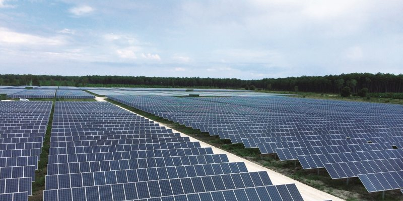

Présentation
Le soleil est une énorme boule de gaz qui brûle depuis plusieurs milliards d’années. Il est 1.300.000 fois plus grand que la Terre, ce qui fait que malgré ces 150 000 000 de kilomètres qui nous séparent nous arrivons tout de même à capter sa chaleur.
L’énergie solaire est transmise sous la forme de lumière et de chaleur. Cette énergie est à notre échelle, inépuisable. C’est donc pour cela que nous considérons l’énergie solaire comme une énergie renouvelable.
Elle est également la source de la plupart des énergies renouvelables que nous connaissons actuellement. En effet, elle est responsable de la mise en mouvement des masses d’eau, d’air, mais également de la photosynthèse (processus permettant aux végétaux de synthétiser de la matière organique en utilisant la lumière du soleil).
Celle-ci peut être utilisée directement par l’Homme pour s’éclairer, se chauffer, ou pour produire de l’électricité par l’intermédiaire de panneaux photovoltaïques.
Un panneau solaire est un dispositif technologique énergétique permettant de capter l’énergie dégagée par le soleil.

Il existe 3 types de panneaux solaires
- Les panneaux solaires thermiques: Ils vont piéger l’énergie thermique et la transmettre à un fluide caloporteur.
- Les panneaux photovoltaïques: Convertissent le rayonnement solaire en énergie électrique
- Les panneaux photovoltaïques hybrides: Ceux-ci vont combiner les deux technologies précédentes et produisent à la fois de l'électricité et de la chaleur tout en améliorant le rendement des panneaux solaires photovoltaïques.